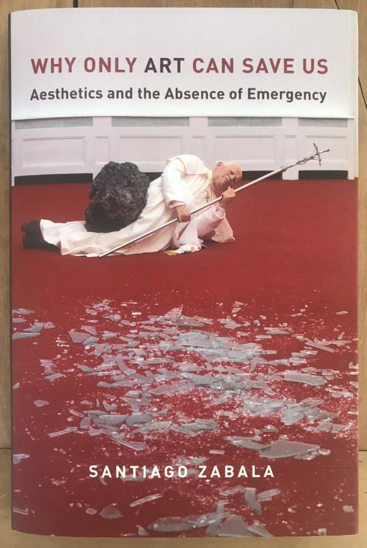
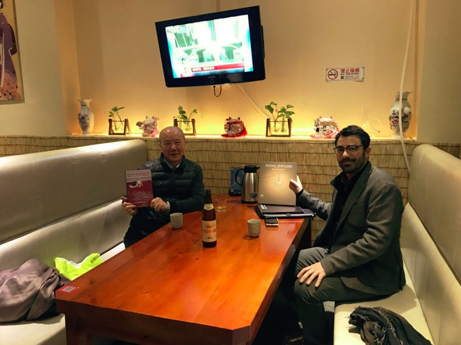
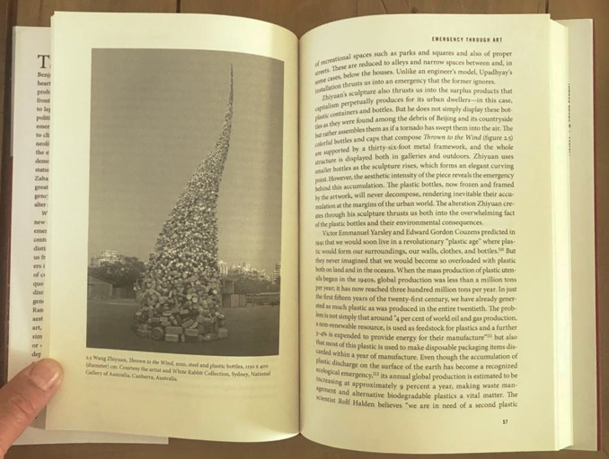

Beata Sirowy
Zabala, S. (2017) Why only art can save us: Aesthetics and the
absence of emergency. New York: Columbia University Press. (HB, pp.
216, £49.95, ISBN 9780231183482)

In his recent book, Why only art can save us, Santiago Zabala makes an important contribution to the socially engaged art discourse, building upon phenomenology and critical theory. It is a text about demands by art, to use Michael Kelly’s formulation [9], i.e. art’s call for action on behalf of the weak, discarded and forgotten – the remains of Being on the margins of contemporary democracies.
The title of the book is a paraphrase of Heidegger’s famous statement ‘only a God can still save us’, indicating a path beyond the world overpowered by technology, where everything is calculable, nature is treated as a standing reserve, and we aim to exploit and control the world. As Zabala argues, Heidegger’s declaration should not be read in a literal sense, but rather as alluding to a forgotten realm of Being in our technological reality. Aiming to dominate and categorize the world, we replaced Being (existence) with enumerable beings (objects), bringing about ‘the endlessly self-expanding emptiness and devastation’ [2], related to the primacy of things over human relationships and nature.
In which sense the realm of Being offers us a salvation? A return to Being is a return to a non-reductionist perception of the world and human existence, a leap beyond instrumental rationality. Art can assist us in this process, awakening the sense of emergency – an awareness that our dominating way of framing the world is not the only option.

Artist Wang Zhiyuan and the author Santiago Zabala
Modern aesthetics and the dominant worldviewThe book is divided into three chapters. The first chapter, ‘The emergency of aesthetic’, situates the problem of art in a wider context and discusses how contemporary aesthetics contributes to the concealment of Being, framing it within the parameters of the dominating worldview. Here the author aims to confront and overcome the metaphysical framework of modern aesthetics, and demonstrate that problem of art extends far beyond this domain.
Following Heidegger, who is the major reference for this chapter, Zabala sees the loss of a sense of emergency as the main problem of our times. There are of course emergencies, like military conflicts, terrorism, or refugee crisis. However, they are framed in terms of our globalized system and its dominant paradigms that include democracy (political), neoliberalism (financial), and NATO (military). Within this system we are offered readily applicable solutions preserving the status quo. There is little space for questioning the established ways of addressing the crises we face, and our role in them. Furthermore, the dominant impression of citizens in the developed countries is that reality is stable and fixed. We believe that everything is functioning correctly, and the current order will bring about the solution of our problems and provide conditions for a meaningful life.
The major problem of this framework is not only its objectifying character, but also how it reduces the world to a predictable ‘picture’, which is constantly being justified politically, ethically, and also aesthetically. Everything that does not fit into this picture is ignored and marginalized. Emergency, on the other hand, suggests openness, undecidedness, and a variety of options. It is an interruption of the reality we are accustomed to. We have to suspend our ordinary ways of perceiving the world – to use Heidegger’s terms, ‘the lucidity through which we constantly see’ [17] – in order to experience it.
The absence of emergency reflects our epoch’s metaphysical condition. Social and political crises we face are, according to Zabala, derivative of this condition. Art can help us to disclose this absence of emergency by turning our attention to the remains of Being – people and ideas forced to the margins of the dominant discourses and striving for change. As the author argues, we need not only political and ethical discourses, but also aesthetic forces to shake us out of the tendency to ignore paradoxes and injustices generated by the dominant paradigms and their instrumental rationality.
Art speaks to us more directly than rational discourses – it has an ability to address us on the existential level, to transform our way of looking at the world, and to mobilize us to action. In this perspective, works of art are far more than objects of contemplation, providing us with sensuous enjoyment – as viewed by modern aesthetics. Following Heidegger, Zabala claims that what makes art is not the quality of what is created, but its ontological appeal [19]. Accordingly, he responds to Heidegger’s call for the overcoming of aesthetics, which similarly to technology frames and organizes beings, in this case to make them conform to the ideal of an indifferent beauty. In doing so, modern aesthetics preserves the lack of sense of emergency and becomes a means of preserving status quo. In order to overcome this condition we need to restore the critical, discursive potential of art.
Art as a subversive strategyThe marginalized challenges of our times are specifically addressed in Chapter 2, ‘Emergency through art’. Here Zabala discusses four categories of problems staying at the margins of contemporary democracies: ‘social paradoxes’ generated by the dominating paradigms; ‘urban discharges’ of slums, plastic and electronic waste; ‘environmental calls’ related to global warming and degradation of nature; and ‘historical accounts’ of ignored or denied events.
Three artists are selected for each of these categories. The works of kennardphillipps, Jota Castro and Filippo Minelli thrust us into the political, financial, and technological paradoxes that shape our social lives. Hema Upadhyay, Wang Zhiyuan, and Peter McFarlane deal with the problem of surplus products emerging on the verge of capitalism and urbanization. Nele Azvedo, Mandy Barker, and Michael Sailstorfer direct our attention to environmental calls caused by global warming, ocean pollution and deforestation. The artworks of Jennifer Kardy, Alfredo Jaar, and Jane Frere offer alternative readings of history and draw our attention to overlooked events.

Wang Zhiyuan’s art work -Thrown to the wind
This part of the book gives a solid insight into how arts existential and ontological alterations work in specific contexts, revealing fundamental problems of our times and mobilizing for action. Their creators, as Zabala argues, have retreated from culture’s indifferent beauty in order to disclose the lack of emergencies in contemporary world, and to draw attention to the remains of Being. This type of art calls for action on behalf of the weak and excluded – art appears here as transformative, critical practice.
Towards an ontological theory of artThe final chapter of the book, ‘Emergency aesthetics’, delineates a theory of art focused on art’s ontological appeal. Zabala’s aim is neither to criticize previous aesthetic theories, nor to propose a new one, but to outline a philosophical stance capable of interpreting existential disclosures of contemporary art. Hence, the art theory outlined in the book is clearly not aesthetic (i.e. focused on a non-cognitive experience of art, as emerging from the perspective of Baumgarten and Kant), but ontological – it addresses art against the background of human existence and the world. Zabala follows here pre-Enlightenment understanding of art, in which the cognitive dimension was central – art’s role was to reveal truth about the reality. This understanding can be dated back at least to the ancient Greeks, for whom beauty and truth were two sides of the same coin, and was in the 20th century revived by phenomenological and hermeneutic thinkers. It stands in a stark contrast to the mainstream aesthetic discourse, inclined to exclude art’s claim to truth, and accordingly to dismiss its theoretical and practical dimensions. As Heidegger points out, modern aesthetics presupposes a particular conception of beings – as objects of representation framed within the dominant worldview. Within this horizon art loses its relation to culture and follows the path of technology. In this context he speaks about ‘the absence of art’ (Heidegger in Zabala 2017:6), a state of being corresponding to the lack of a sense of emergency.
In order to overcome this condition, we need not only to put aside aesthetic representationalism, but also to disclose and interpret the forgotten, existential appeal of Being. Following Gadamer, Zabala considers art not an object on which we look and contemplate, but an event that appropriates us into itself and reveals the world. It invites us into a conversation that does not aim for a disengaged exchange of different interpretations, but addresses us in a direct way and changes our ways of perceiving the world. Further, building upon Danto, Ranciere, and Vattimo, Zabala claims that the truth of art no longer rests in representation of reality, but rather in an existential project of transformation. Today, artists and their audiences are called to intervene on behalf of humanity.
Art can respond to the absence of the sense of emergency in different ways. For Heidegger artworks disclose truth about the world by expressing it in its fullness and uniqueness in a non-reductive manner. As he demonstrates on the famous example of peasant’s shoes depicted by Van Gogh, art can offer an in-depth glimpse into human reality. Critical thinkers on the other hand adapt a more subversive strategy, altering the reality we are accustomed to rather than representing it. In this perspective art confronts us with unexpected, strange, surprising, and provokes us to search reasons for that oddness. This in turn motivates us to take an ethical stance – to become existentially involved for the sake of the weak and marginalized. Zabala follows the latter perspective, arguing that the lack of a sense of emergency in our contemporary realities demands a new aesthetic shock. What produces shock in art are not its formal qualities, but its refusal to situate itself within established perspectives.
As we can see in the examples from Chapter 2, alterations of reality created by artworks disrupt our fixed ways of seeing the world and require response and intervention instead of contemplation. To confront the alterations revealed in critical artworks, emergency aesthetics must depend on hermeneutics – an effort of interpretation is necessary to retrieve the existential appeal of art. Zabala follows Gadamer’s view of interpretation as a fusion of horizons, governed by the existential situation of the interpreter. However, he sees the keystone of hermeneutics in the disclosure of the essential emergency – the absence of emergencies in our contemporary world, while for Gadamer it was the experience of truth revealed in art. Accordingly, in Zabala’s emergency aesthetics interpretation has a militant, anarchic character. As he points out, anarchic interpretations do not strive for truth or completeness, but rather seek to preserve the disclosure of emergency and invite us to a resolute action in favour of the weak [120].
The final chapter is followed by an afterword, engaging in a direct dialogue with critical theory – such a dialogue is very much implicit throughout the book. The afterword also situates Zabala’s effort in a wider context of contemporary, socially engaged art theory.
Final reflectionsZabala’s emergency aesthetics represents an original attempt to bridge phenomenology and critical theory, and offers a well-thought perspective on the challenges of contemporary democracies and the role and potentials of art in addressing them. Importantly, the book is more than a valuable contribution to art discourse. It offers as much aesthetic as ethical theory, providing a critical glimpse on the current way of framing the world and human life, and asking for action on behalf of the weak, marginalized, and forgotten.
Having said that, it must be noted that Zabala’s work is not an easy lecture. Although Chapter 2, presenting selected artists and their responses to the lack of the sense of emergency, is generally accessible, philosophical discussions in Chapter 1 and Chapter 3 may be difficult to follow for readers completely unfamiliar with Heidegger’s phenomenology.
One of the strengths of the text is a breadth of phenomenological references, also including less commonly quoted works of Heidegger, such as Mindfulness (2006/1938-1939)[1]. The book would however benefit from a more explicit conversation with critical theory, to which indebtedness is mentioned mostly in the afterword. Heidegger appears as the principal reference throughout the text, but the view that art creates emergencies through alterations and disruptions of reality goes somehow beyond his perspective, alluding among others to Adorno.
The book can be recommended to philosophically inclined audiences interested in socially engaged art theory, and art’s response to contemporary crises. The readers interested specifically in Heidegger’s view of art will find this book very relevant throughout.
[1] Heidegger, M. (2006/1938-1939) Mindfulness (Besinnung), trans. E. Parvis and T. Kalary. London and New York: Continuum.
the author(s)Beata Sirowy (PhD 2010, The Oslo School of Architecture) is Senior Research Fellow at the Department of Urban and Regional Planning at the Norwegian University of Life Sciences. Her educational background consists of both philosophy and architecture, and her research interests lie at the intersection of these disciplines. She is particularly interested in phenomenology and hermenutics and their implications for architecture and spatial planning, and in broadly understood ethical aspects of urban development. Her publications deal also with phenomenological theory of art. She is a section editor of the Nordic research journal Formakademisk.
Email: beata.sirowy AT nmbu.no